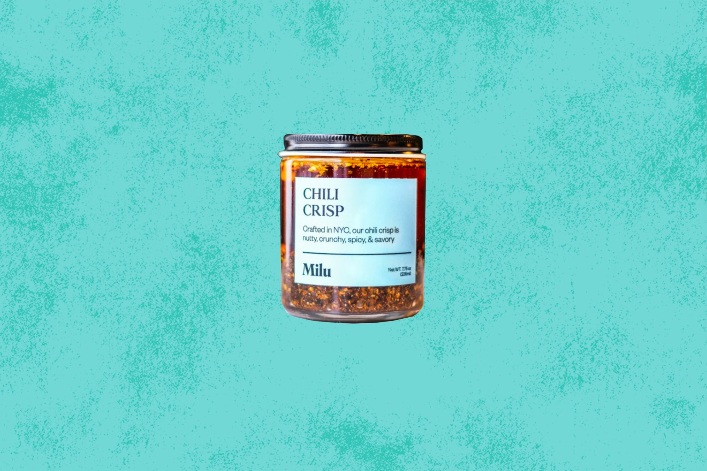

Lao Gan Ma Spicy Chili Crisp

This a recipe a chili crisp taste test without trying the OG, i.e.
Lao Gan Ma Spicy Chili Crisp was first crafted in 1984 by Tao Huabi, a female Chinese chef as a sauce for noodles in her Guizhou, China restaurant.
Ingredients
- 1 Try it on eggs, noodles, or in a stir-fry.
- 2 garlic, onion
- 1 small peanuts, fermented
- 1 soybeans, sugar
- 3 MSG, and a neutral soybean oil coats
Directions
- noodles while also providing a subtle heat and mouth-pleasing crunch.
- It's not the spiciest we tasted, nor the most flavorful, but it's easily the most versatile.